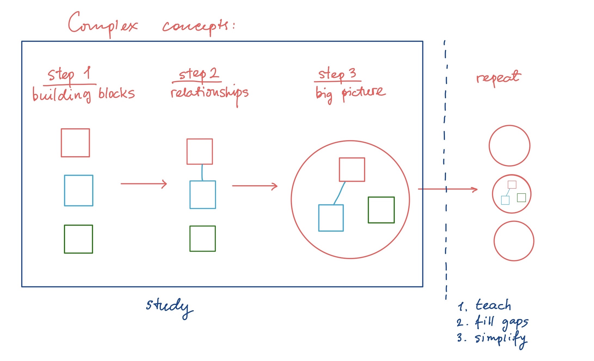

A bit of my back story in order to justify me writing these words at all. I was a goodish, very curious student in elementary school, then i got very bored with school (as we well aware education system in most cases isnt known to cultivate a spirit of curiosity and exploration in young minds). By the time school was over i cared so little about it i barely graduated (such bad were my marks). I have decided that i will never go to school again because it was miserable and not for me and for 10 years i was drifting along life without so much as a clue of what i wanted to do when i have discovered theoretical neuroscience. This meant not only going back to school, but getting a degree in mathematics - the science that was dubbed by my teaches as "not for me". This meant studying. And this meant learning how to. Now i write from the perspective of a neuroscience PhD student.
What this article is not:
This piece of writing however is not a guyed of how to become a good student and the above pragraph is brought up only to illustrate that whatever i was doing has brought me this far.
I can not stress it enough: there are plenty of very educated creative people that dont have any type of degree, as well as there are plently of people who do have one but have never created an original work (besides those early years when we all do).
What this article is:
This is a wholistic lifestyle approach to learning and living, which as a concequence improved my school objectives and allowed me to achive things that 5 years ago i though were impossible.
One could argue that survival is a primary reason fro any life from. But taking into consideration that we, humans are such complicated curious creatures and based on my personal experience, the purpose of this writing is my deep belive that we are most fulfilled in life only if we can create things based on our knowldge or, as Noam Chomsky put it: " the core requirement of any human being is the ability to independently inquire and create on the basis of resources avaliable to you." He continues: "it is not important what do we cover in this class, but what you discover". Professor Chomsky is tlaking about what does it truly means to be educated, but i want to look at this statement from a slightly more genral prespective, which, while could be simply followed from his words, could also be overlooked. Chomsky is talking about a state of "being" (educated), i would like to focus on the process of inquary and creation. This process does not require a PhD or BS or even high school education, it doesnt even requiere elementary school, which brings me to the best learners known to mankind - ourselves, in our earliest of days.
It is important to realize that if you are reading this article you already at some point of your life, very early on, have mastered the skills of learning. However counterintuitive it seems, however stuck one feels, it is quite remarcable that each one of us, at the very beginning of life was a perfectly educated person: we all learned the world by the means of active exploration employing all the tools avaliable to us whatever those might be - crawing, walking, climbing, tasting, touching, looking - actively experimenting!
With this outlook in mind a serious question will arise in the mind of any thoughtful reader: "If we as babies and children were profficient enough in the art of learning so much so that any one of us could have given a masterclass in this topic at the age of 3, how come most of us find ourselvs facing what looks like an unpeenetrable obsticle whicle trying aquire some particular bit of knowledge later in life?". The second part of Chomskys quote can shed some light on this particular issue: " to be truly educated means not only to inquire and create, but to do so on the basis of resourses avaliable to you, to know where to look, to know how to formulate questions".
While i am not nearly a specialist in child development and only because i found it uself, i will share my own thoughts on the matter.
Very early in life we had biology hand us nesessary prereques in order to become those learning virtuosos that we once were. We also had envionment to ensure that we practice and put our resourses and skills to use. Once these gifts of nature had ran out we were left to our own (our our parents at earlier stages) devices to both formulate the questions that were important enough to ask and practice self dicipline in order to advance our skills. My main point being: at some point both biology and exploration of physical world using our sences is done, other mechanism must replace them in order for the whole system not to go rusty. Sadly, this doesnt always happen and we find ourselvs to be the very definition of rust.
Luckly, there are things that we can do in order to get our learning maschinery rolling smoothly once again.
If we want to learn how to write or paint we would need to know how our hand moves. This is of course, a primitive example as we all know how to write. But same can be said about any physical activity. Just like any physical ativity starts with the body, any mental activity starts with the mind. But what is the difference?
It just so happened that our language has much more words that are aimed to descrive the external world and things in it. Which leaves the internal world to exist in a certain mist of mystery, not only because of its immence complexity that we have to idea how to conquer, but also because the language we use to talk about our inner world is extremely primitive. So what do we have?
We can give very specific directions to which extremedy to use, which muscle at what time to move, a specific direction in which to do so, the force to apply, which sences to utilise to perform this or that physical activity - the list goes on and on. But what guidance do we have when it comes to performing mental tasks? It usually comes down to extremely vague "concentrate", and "think about it" =/. This disadvantageos set up alone is difficult to overcome and we r not going to focus on the fact that the culture we were born into is extremely outer-oriented, because that, again, is a completely different story.
Is there a way to aid this situation? Luckly, yes. There is a well-known way to familiarise yourself with the mental world and this way is the way of meditation. I have seen this advice in multiple places (mostly not study related) and before i started practicing it i was quite irritated by its repeated appearance.
But let me put it the way of a metaphore: if we compare thinking and creativity to a complex maschine, meditation is comarable to reading the manual. Yes, the process could be tedious, slow and seemingly useless at first, but the advantages to learning (and life in general) are immence. Learning without meditation for me was akin to building a house without a foundation - yes, you will get some sort of structure, but having a solid foundation will provide such an advantage no level of structure complexity will.
I will not be going into meditation tecniques here, there are plenty resourses, books and online articles that can explain away things with much more neccessary details than i possibly could. I will however leave you with some resourses.
"Altered traights: Science Reveals How Meditation Changes Your Mind, Brain, and Body" by Goleman and Davidson - the title is quite self-explanatory, but i can add that it was reading this book that made me give meditation a try in the first place.
The next section is dedicated to some specific tecniques that came together to form my general mode of existance and their advantages, and how are they linked to meditation. This list is nowhere exhaustive and along it i will be placing references of invaluable resourses from which i learned about this or that tecnique.
This bullet point along can be devided into two major categories each of which approaches learning from two slightly different perspectives: process and goal oriented. One in no way excludes another, both are important, however in our goal-oriented society people rarely pay attention to the process.
So what is the difference?
When employing goal-oriented approach one picks a goal to accomplish, perhaps mastering a skill, and works towards it. The key is to practice deliberatly. What does it mean? The best analogy that comes to my mind is a baby who learns how to walk: he is fully focused, concentrated, the attention is non-wavering: a new thing is happening and all the sences are laser sharp on experiencing this one thing. A counter example to that of a person who does the same repetitive motion thoughtlessly over and over again while his/her mind is elsewhere. Dont get me wrong, there is a power in repetition, but there is only a power in MINDFUL repetition. If you would like to dig deeper into the power of mindful (or deliberate practice) you might want to chech out "Peak" by Anders Ericsson where you can find not only details of this why and how this specific mechanism works, but also tips and guidlines of applying it yourself.
While i dont think i need to get into the reason why goal-oriented approach is valuable, i do however want to point out that once goal is established there is no need to think about it, dwell or daydream about it (none of that "Secret" nonsence) - the goal is there to merely set up the direction in which one would like to proceed in and, in some occasions, when the circumstances change drastically, to perhaps reconsider it altogether.
Now lets take a look at a process-oriented challenge. As i already mentioned, this approach very often is grossly overlooked in our society and sometimes even frowned upon, dabbing it "a waste of time". I, however found that not only it is very beneficial for my learning and overall being, but it is arguably even more important.
The fact that there is no well-defined goal doesnt mean there is no benefit. On top of stretching brain muscles of various sourts, doing random challenges could give one inspiration to look at things from surprising, never before considred angles and develop the power of generalization and ability to find connections in unexpected places.
The difference from goal-oriented approch is just that: there is no goal per se, the objective is to find a challenge and focus on the process of learning itself, whatever the challenge might be. Examples are: learning to write with your non-dominant hand, spend all day with you eyes closed or one hand tied behind you back, learning an instrument, walking only backwards for a day, going to a new place, trying (or making) new dish every week - there is really no limit! The point is so break away from running on autopilot and pay attention to what is happening right now by exposing yourself to a novel action.
Once again i take inspiration from the ulitimate learning pros: babies. They dont need to set up goals or exercise self-control, they just explore the world in a playfull, engaging act of exploration.
Just like with meditation there are plenty of resourses online for challenging ideas (a google search for self-experimentation might also prove useful). Keep in mind that just coming up with these would be a great mind-stretching exercise, so perhaps dont rush toward the ready-to-go solution internet has to offer, remember - it is all about the process.
If you think about it the intersection between meditation and the performance of novel experience is hard to miss: meditation is a workout for the mind-muscles of mindfulness and awareness one uses to deliberate practice.
Just like with meditation, i have read about the benefits of journaling and writing many times and even attempted it on multiple accasions. With no luck i must add. It was untill is changed the writing aproach. Interestingly enough (or perhaps completely logically) the change of approach was somewhat informed and reinforced by both the first bullet point and meditation practice - the wrting must be deliberate and mindful.
Simple intorspection will show that the speed of though can be light-comparable, especcialy if you are no stranger to racing thoughts, in which case (i know from personal experience), one cant even trace the train: thoughts appear and woosh away only to be raplaced by its successors at the speeds which makes it impossible to even understand what is goin on. This style of journaling doesnt focus on the recitation of the events of the past day, instead written words are used as a mean to slow down the stream of consciousness, to make a hard-to-reach-and-capture thoughts more tangible, more accesible and concrete by putting them on paper in order to be able to analyse and play with them.
Again, the link between the writing and meditation is not hard to trace - they both have a component of slowing down and taking a look at once mind. And while mindfulness meditation stops at practicing slowing and observation, writing utilises this ability in order to organise more complex concepts and thoughts.
As previously mentioned, i needed to go from "not a math person" to "BS in mathematics" so i had some things to figure out.
Two things, helped me in this regard:
1. Richard Feinman's tecnique (study-teach-fill the gaps-simplify)
2. and "a Mind for Numbers" by Barbaka Oakley
It is not a surprise that if one wants to learn something complex the best way to go about it is by learning the basic, simple, bite-sizes bits of information, mastering them and moving on to building upon them or combining them together.
I find that this process is most useful to think about as in respect to habbit formation. The actions that we performed automatically and without a neccessity to think about it are units from which a more complex behaviours can be formed. when "units" (i.e. basic building blocks of a complex concept) are aquired we can start manipulate these units by building and figuring out relationships between them or incorporating them into a bigger picture (those are not nesessarily the same things and can vary depending on the concept or a problem in question).
As this stage it is useful to utilize the 2nd step form the Feynman tecnique: teach or explain a concept to somebody. This action helps solidify the understanding and relatioships of the parts forming a whole, solid picture. Steps 3 (fill the gaps) and 4 (simplify) of Feynman follow automatically.

There is a well known fact in the world of math that one cant learn math by just reading - math requires a hands on (minds on?) approach. Here is where my understanding of learning differes from this: proper learning of everything requires a hands-on approach, its just other places (or sciences) can let one slide by slacking - using thoughtless memorisation or inattention to details (basic building blocks), while math is entirely unforgivable in this regard. It is also exactly the reason why some people are told they cant do math, but its not the math they cant do, they just havnt learned to use their mind for active exploration to its full extent.
It makes all the difference in the world: being pulled in a carrage like a disabled person through the unknown terrain vs walking using your own feet and touching things with your own hands.
I digged out these interesting tecniques while thaking biology class that required word memorization and then just went on having fun with them.
One of them is called Memory Palaces (used by Sherlock Holmes and mentioned by Derren Brown on multiple occasions - i read it in his book "Tricks of the Mind") and another one is a more general association teqnique.
The purpose of a memory palace is to remember lists of things. it is accomplished by coming up with a place in your mind that is familiar to you and placing items that you know and need to remember in different places in this location usually by associating these item with one another or the place where they have been put down by some funny connection. After the items are placed you simply trace your walk and pick up things as you go.
The association teqnique is utilizes just the links between the items and i used it to remember the new words (while in the previous scenario the words or items are mostly well-known).
At first glance these two could seem quite artificial and have a very specific goal, but if we would think about it a little longer we can see that the process is of simply connecting things togther that were not connected previously. Whats the use of that? Virtually every new thing that we learn is connected to some other thing that we have alreary were familiar with, so one can agrue that making connections is an essential part of the learning process. while these teqniques have mentioned as tools for memorisation i think their importance is much more profound - they exercise the muscles of association that are constantly used when learning.
The connection to meditation in this instance is more subtle than in other case. The aforemantioned tecnique uses a physical location or things to be linked (which usually are items or objects) as a jumping off point. This, however is not a nesessary limitation by any mean. The mind-space itself is not limited to physical locations or objects, things to be associated could be of a very different nature: situations, colors, smells, feelings, sensations, memories - the possibilities are truly unbound. What meditation does is allowing one to look around the mind-space, to familiarise him/herself with everything that is there.
Things that are worth mentioning:
references:
1. thinking fast and slow
2. Altered traights
3. Peak
4. a mind for numbers
5. mind hacking
6. tricks of the mind
created with
Website Builder Software .